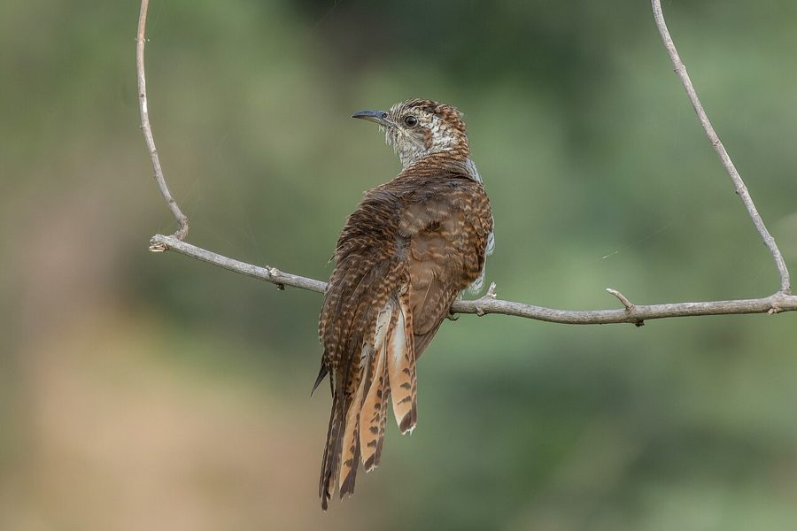

बैंडेड बे कुक्कूBanded Bay Cuckoo
Cacomantis sonneratii · Cuculidae · BRD-0377

- Scientific name वैज्ञानिक नाम
- Cacomantis sonneratii (Latham, 1790)
- Family कुल
- Cuculidae
- Hindi हिंदी
- बैंडेड बे कुक्कू
- Local names स्थानीय नाम
- banded bay cuckoo, chittidar kookoo
- Status here यहाँ की स्थिति
- native
- Movement आवागमन
- Resident, here all year
- Known from कहाँ दर्ज
- Others have published records from the Basti–Ayodhya districts बस्ती–अयोध्या के ज़िलों से दूसरों के प्रकाशित अभिलेख
- IUCN IUCN
- LC
- Review समीक्षा
- not yet reviewed
When to look कब देखें
Expected mainly in January, March, October. मुख्यतः जनवरी, मार्च, अक्टूबर में अपेक्षित।
Tell it apart from इनसे अलग पहचानें
बैंडेड बे कुक्कू / Banded Bay Cuckoo
Cacomantis sonneratii (Latham, 1790) — Cuculidae
बैंडेड बे कुक्कू — जंगलों और घने पेड़ों वाले खुले व खेती वाले इलाकों में रहने वाली छोटी शर्मीली कोयल। इसका पूरा ऊपरी शरीर लाल-कत्थई और बारीक काली आड़ी धारियों से भरा होता है, तथा सीना और पेट सफेद होकर बारीक भूरी लहरदार पट्टियों से धारीदार दिखता है। इसकी आंखें भूरी होती हैं जिनके चारों ओर एक चमकीला लाल घेरा होता है। यह पत्तों के बीच छिपकर रहती है और अन्य पक्षियों के घोंसलों में अंडे देने वाली परजीवी कोयल है।
Quick Identification त्वरित पहचान
| Feature | Description |
|---|---|
| Habit | Slender, secretive cuckoo perching in dense forest or heavily-wooded country (Baker 1927, pp. 158–159) |
| Upperparts | Remainder of upper plumage barred brown and rufous; white specks on forehead (Baker 1927, p. 157) |
| Underparts | Sides of head and neck, lower plumage, axillaries and under wing-coverts white or buffy-white with very fine wavy bars of brown (Baker 1927, pp. 157–158) |
| Tail Pattern | Middle tail-feathers rufous with black centres running in incomplete bars; tail tipped white and subtipped black (Baker 1927, p. 157) |
| Bare Parts | Iris brown or slaty-brown with a bright red outer circle; bill greenish-yellow, culmen dark brown to black (Baker 1927, p. 158) |
Field tip: Look for a slender cuckoo with brown-and-rufous barred mantle and fine wavy brown barring across white underparts, showing a bright red outer eye ring (Baker 1927, pp. 157–158).
हिंदी — कैसे पहचानें:
कत्थई और भूरी आड़ी धारियों वाली पीठ, सफेद सीने पर महीन लहरदार भूरी लकीरें, और भूरी आंख के चारों ओर चमकीला लाल घेरा (बेकर 1927)।
Morphology आकारिकी
Measurements as given by Baker (1927) for the Indian Banded Bay Cuckoo (Penthoceryx sonneratii):
| Measurement | Range |
|---|---|
| Biometrics | Total length about 240 mm.; wing 116 to 133 mm.; tarsus 17 to 18 mm.; culmen 19 to 21 mm. (Baker 1927) |
Stuart Baker (1927, pp. 157–158) described the adult plumage: "A few white specks and bars on the forehead and anterior crown ; remainder of upper plumage barred brown and rufous ; tail tipped white and subtipped black, the middle tail-feathers rufous, the centres black running on to either web in incomplete bars, the rufous increasing outwardly until on the outermost feathers the black shows merely in narrow bars... sides of head and neck, lower plumage, axillaries and under wing-coverts white or buffy-white with very fine wavy bars of brown."
Colours of soft parts: "Iris brown or slaty-brown with a bright red outer circle ; bill greenish-yellow or horny-green, the culmen and tip dark brown to black; gape more yellow; legs and feet dull greenish-slate or greenish-brown" (Baker 1927, p. 158).
Vocalisations: A high-pitched, whistled four-note cadence smoke-on-the-pipe or wee-ti-wee-ti, ascending rapidly in pitch and repeated in long monotonous series from tall tree perches during warm mornings (Grimmett et al. 2011).
हिंदी:
बेकर (1927) के अनुसार कुल लंबाई लगभग 240 मिमी, डैने 116 से 133 मिमी, टार्सस 17 से 18 मिमी और चोंच 19 से 21 मिमी होती है। आंखें भूरी या स्लेटी-भूरी जिनके चारों ओर चमकीला लाल घेरा होता है, चोंच हरी-पीली और पैर स्लेटी-हरे होते हैं।
Behaviour & Ecology व्यवहार और पारिस्थितिकी
Baker (1927, pp. 158–159) recorded: "This Cuckoo is a frequenter of forest or of heavily-wooded open and cultivated country, being rare in dry areas and absent in the driest... In its habits it closely resembles the various races of Cacomantis but its food over the greater portion of the year seems to be almost exclusively caterpillars and termites."
It is a brood parasite, laying eggs in the nests of small passerines, particularly laughingthrushes, babblers, and bulbuls across wooded tracts (Ali & Ripley 1987).
हिंदी:
बेकर (1927) के अनुसार यह वनों और पेड़ों से भरे खुले व कृषि क्षेत्रों में रहती है, शुष्क इलाकों में दुर्लभ और सबसे सूखे भागों में अनुपस्थित होती है। इसका आहार साल के अधिकांश समय इल्लियां और दीमक हैं।
Life Cycle / Phenology जीवन चक्र
Baker (1927, p. 158) recorded the breeding phenology: in the Bombay Presidency the breeding season is very long, with eggs taken from February to August, while in the hills of Assam they breed principally in May and June, with eggs taken from late April to early August.
In Uttar Pradesh, published reliable GBIF occurrence records fall in January, March, and October, indicating permanent residency in the wooded Terai margin.
हिंदी:
बेकर (1927) के अनुसार इसका प्रजनन काल विभिन्न क्षेत्रों में फरवरी से अगस्त तक रहता है जब यह मेजबान चिड़ियों के घोंसलों में अंडे देती है। उत्तर प्रदेश में इसके रिकॉर्ड जनवरी, मार्च और अक्टूबर में हैं।
Host Plants or Prey आहार
Baker (1927, p. 159) noted that "its food over the greater portion of the year seems to be almost exclusively caterpillars and termites."
हिंदी:
बेकर (1927) के अनुसार इसका भोजन साल भर मुख्य रूप से इल्लियां और दीमक हैं।
Predators / Natural Enemies शत्रु
Forest-dwelling birds of prey, including small accipiters and owls, prey on adult cuckoos in dense canopy foliage.
हिंदी:
जंगलों में रहने वाले छोटे शिकारी पक्षी जैसे शिकरा और उल्लू इनका शिकार करते हैं।
Agricultural / Human Relevance कृषि प्रासंगिकता
Baker (1927, p. 159) found its food "over the greater portion of the year ... almost exclusively caterpillars and termites"; no source opened for this atlas assesses its effect on crops or trees. Protected under the Wildlife (Protection) Act, 1972.
हिंदी:
बेकर (1927) के अनुसार साल के अधिकांश समय इसका भोजन लगभग पूरी तरह इल्लियां और दीमक हैं; फसलों या पेड़ों पर इसके प्रभाव का आकलन इस एटलस के किसी स्रोत में नहीं है। यह वन्यजीव (संरक्षण) अधिनियम, 1972 के तहत संरक्षित है।
Expected Locally स्थानीय रूप से अपेक्षित
Not a field record. Written from published accounts for eastern Uttar Pradesh. No confirmed local sighting yet — if you have seen it, that is what the atlas needs.
अभी तक स्थानीय पुष्टि नहीं। यह विवरण प्रकाशित स्रोतों से है, किसी अवलोकन से नहीं।
Mature, well-wooded orchard tracts, riparian sal forests along the northern terai fringe, and extensive mango-mahua topes in eastern Uttar Pradesh provide suitable foliage habitat.
GBIF holds published records from the wider Awadh–Purvanchal plain, none yet from Basti–Ayodhya. Confirmed published regional records come from Bahraich (two records, in 2014 and 2016) and Lakhimpur Kheri (two records, in 2024), recorded during January, March, and October. Two eBird lists from Faizabad dated 7 April 2024 are from observers whose Faizabad lists the atlas does not rely on and are excluded here.
A first record would be a photograph with place and date, sent through the About page.
Distribution वितरण
Global range: Baker (1927, p. 158) recorded: "India, Burma and Siam as far South as Central Tenasserim. Common in India on the Malabar coast and Southern Bombay Presidency and extremely common in the hills of South Assam. Elsewhere it is scattered, but rare, throughout the wetter, more wooded parts both of the plains and the lower hills of the Himalayas from Mussoorie to Assam."
In India: Baker (1927, p. 158) stated: "scattered, but rare, throughout the wetter, more wooded parts both of the plains and the lower hills of the Himalayas from Mussoorie to Assam."
In Uttar Pradesh: Confirmed occurrences are documented from the wooded northern plain in Bahraich and Lakhimpur Kheri districts.
In Basti district / eastern UP: GBIF holds no reliable record from Basti or Ayodhya (two unconfirmed Faizabad checklists are excluded); the nearest confirmed records are from Bahraich and Lakhimpur Kheri.
हिंदी:
बेकर (1927) के अनुसार इसका वितरण भारत, बर्मा और स्याम में है। भारत में यह मालाबार और असम में आम है, तथा मसूरी से असम तक हिमालय की निचली पहाड़ियों और नम मैदानी भागों में दुर्लभ रूप से पाई जाती है। उत्तर प्रदेश में इसके पुष्ट रिकॉर्ड बहराइच और लखीमपुर खीरी से हैं।
Research Questions शोध प्रश्न
- Which songbird species serve as primary brood hosts for the Banded Bay Cuckoo in the Terai deciduous belt? / तराई के जंगलों में कौन सी चिड़ियां इस कोयल के अंडों को सेने का काम करती हैं?
- Does the territorial whistling frequency of this cuckoo increase significantly during pre-monsoon heat waves? / क्या मानसून से पहले की भीषण गर्मी में इसकी पुकारने की गति बढ़ जाती है?
- How do Banded Bay Cuckoos partition canopy foraging heights when sympatric with Grey-bellied Cuckoos?
- What role do extensive mango orchards in eastern Uttar Pradesh play in providing stepping-stone habitat for forest cuckoos?
- Can local naturalists differentiate this species from juvenile Common Hawk-Cuckoos using call structure and plumage barring? (An observer can look for the uniform rufous cross-barring on the entire mantle and distinctive whistled song.)
Similar Species मिलती-जुलती प्रजातियाँ
| Species | How to tell apart | हिंदी | |
|---|---|---|---|
| [[grey_bellied_cuckoo | Grey-bellied Cuckoo]] (Cacomantis passerinus) | Adult male has uniform dark grey upperparts and belly with white vent; hepatic female lacks close wavy underpart barring (Baker 1927, p. 154) | ग्रे-बेलीड कुक्कू |
| [[common_hawk_cuckoo | Common Hawk-Cuckoo]] (Hierococcyx varius) | Much larger, hawk-like posture, unbarred ashy-grey upperparts, rufous-washed breast with dark streaks (Baker 1927, p. 148) | पपीहा / ब्रेनफीवर चिड़िया |
| [[indian_cuckoo | Indian Cuckoo]] (Cuculus micropterus) | Noticeably larger, brown-grey mantle, broad black subterminal tail band, widely spaced bold black breast bars (Baker 1927, p. 144) | इंडियन कुक्कू |
Field rule: The brown and rufous barred upperparts, finely cross-barred whitish underparts, and bright red outer eye ring identify the Banded Bay Cuckoo (Baker 1927, pp. 157–158).
हिंदी:
ग्रे-बेलीड कुक्कू का शरीर स्लेटी होता है; पपीहा आकार में काफी बड़ा और शिकरा जैसा दिखता है; इंडियन कुक्कू की छाती पर चौड़ी काली पट्टियां होती हैं।
Taxonomy & Classification वर्गीकरण
Original description. Described by John Latham in 1790 in Index Ornithologicus (Vol. 1, p. 215), under the basionym Cuculus sonneratii, with the type locality given as India (restricted to North Cachar Hills).
Subspecies. Stuart Baker (1927, pp. 157–160) treated Indian birds under Penthoceryx sonneratii sonneratii. Modern authorities recognize Cacomantis sonneratii across India, northern Burma, and Thailand, within the polytypic species Cacomantis sonneratii.
Family and order placement. Order Cuculiformes, family Cuculidae (cuckoos), genus Cacomantis.
IUCN status rationale. Evaluated as Least Concern (LC) on the IUCN Red List (BirdLife International 2016).
हिंदी:
जॉन लैथम ने 1790 में भारत से इसका वर्णन कुकुलस सोनेराती के नाम से किया था। बेकर (1927) ने इसे पेन्थोसेरिक्स वंश में रखा था, जबकि आधुनिक वर्गीकरण में यह कैकोमेंटीस वंश में है। यह संकट-मुक्त (LC) है।
Photo Gallery फोटो गैलरी
No photos yet — add field photos to media/species/banded_bay_cuckoo/ and run node scripts/sync_photos.js.
Photos needed आवश्यक फोटो
- [ ] Adult bird calling from canopy branch showing rufous cross-barring (पेड़ की डाल पर पुकारता वयस्क पक्षी जिसमें कत्थई धारियां दिखें)
- [ ] Underpart view showing fine wavy barring on breast and belly (नीचे से सीने और पेट की बारीक धारियों का दृश्य)
References संदर्भ
- Latham, J. (1790). Index Ornithologicus. Vol. 1. Leigh & Sotheby, Londini, p. 215 (as Cuculus sonneratii).
- Baker, E. C. S. (1927). The Fauna of British India, Including Ceylon and Burma. Birds. Vol. 4. 2nd ed. Taylor & Francis, London, pp. 157–160 (as Penthoceryx sonneratii).
- Ali, S. & Ripley, S. D. (1987). Compact Handbook of the Birds of India and Pakistan. 2nd ed. Oxford University Press, New Delhi.
- Grimmett, R., Inskipp, C. & Inskipp, T. (2011). Birds of the Indian Subcontinent. 2nd ed. Christopher Helm, London.
- Rasmussen, P. C. & Anderton, J. C. (2012). Birds of South Asia: The Ripley Guide. 2nd ed. Smithsonian Institution and Lynx Edicions, Washington, D.C. and Barcelona.
- BirdLife International (2016). Cacomantis sonneratii. The IUCN Red List of Threatened Species 2016: e.T22683917A93007354. doi:10.2305/iucn.uk.2016-3.rlts.t22683917a93007354.en
- GBIF Occurrence Data — Cacomantis sonneratii, India (2025).
Source file: species/fauna/birds/banded_bay_cuckoo.md